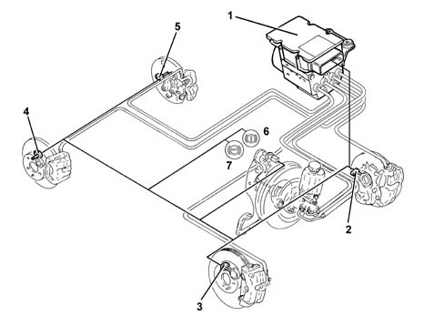

Specifications
- Path
- Descriptions > 33 BRAKES > 3340 ANTI-LOCK BRAKING SYSTEM (A.B.S.) > Specifications
- Kind
- system description
- Applies to
- all engines; all production periods
- Interactive page
- https://sloeber94.github.io/elrnDB-lThss/en/#/151899
Applies to: all engines; all production periods
The vehicle is equipped with an ABS/EBD brake control system.
The ABS is fitted parallel to the hydraulic braking system so that should it not work braking would still be guaranteed.
The ABS incorporates the EBD function (Electronic Brake force Distribution) therefore the hydraulic system does not have a rear load proportioning valve.

- 1 - ABS/EBD control unit
- 2 - Left front wheel sensor
- 3 - Right front wheel sensor
- 4 - Right rear wheel sensor
- 5 - Left rear wheel sensor
- 6 - EBD failure (6 and 7 on simultaneously)
- 7 - ABS warning light
The A.B.S. control unit is connected to the C-CAN and is called the NFR (brake node).
The ABS control unit implements the EBD and ESP functions (vehicle dynamic control).(See assembly ) 3350E VEHICLE STABILITY CONTROL SYSTEM
The ABS control unit is connected to the front wiring, the system cable loom is incorporated with the engine compartment cable loom.
The control unit receives and transmits information on the C-CAN and supports the following functions:
- acquiring a direct speed signal for the four wheels and processing and transmitting the signal via the C-CAN
- acquiring a direct signal for the drive wheel speed and processing and transmitting the signal via the C-CAN for the milometer
- sending the speed signal (V.S.O.) on a discreet line to the Body Computer (used if there are problems with the C-CAN
- directly acquiring the NA brake lights signal for the ABS, ASR and NA and NC for the ESP
- managing the ABS, ASR, EBS and ESP warning lights via the C-CAN line and acquiring feedback on the warning light status from the NQS
- Autodiagnosis on a direct line (K line).